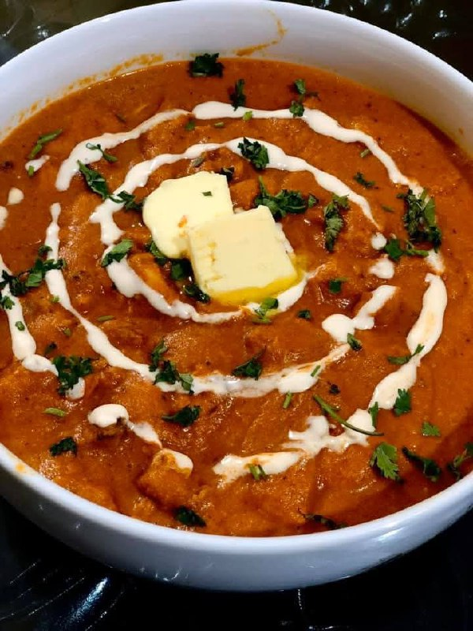

Butter Chicken
Butter Chicken — the king of creamy curries! This classic Indian dish features tender chicken simmered in a rich, buttery tomato sauce. Perfectly balanced with spice, sweetness, and creaminess — it's best enjoyed with naan or steamed rice.
Ingredients
- 500g boneless chicken (cut into pieces)
- 3 tbsp butter
- 1 cup tomato puree
- 1/2 cup fresh cream
- 2 tbsp yogurt
- 1 tbsp ginger-garlic paste
- 1 tsp red chili powder
- 1 tsp garam masala
- 1 tsp cumin powder
- 1/2 tsp turmeric powder
- 1 tbsp lemon juice
- Salt to taste
- Fresh coriander for garnish
Instructions
- Marinate the chicken: In a bowl, mix chicken with yogurt, lemon juice, red chili powder, turmeric, and salt. Marinate for at least 30 minutes.
- Cook the chicken: Heat 1 tbsp butter in a pan and cook the marinated chicken until golden brown. Remove and keep aside.
- Prepare the sauce: In the same pan, add remaining butter, then add ginger-garlic paste and tomato puree. Cook for 5-7 minutes.
- Spice it up: Add cumin powder, garam masala, and salt. Stir well and cook until oil separates.
- Add cream & chicken: Add cream and cooked chicken. Stir gently and simmer for 10 minutes until chicken is soft and sauce is creamy.
- Garnish & serve: Top with fresh coriander and a swirl of cream. Serve hot with naan or rice. ü´ìüçö
Tip: For extra flavor, grill or slightly char the chicken before adding it to the sauce. It gives a smoky restaurant-style aroma!